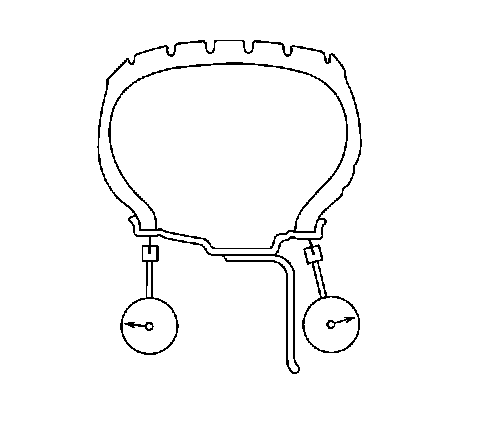
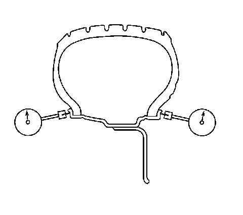
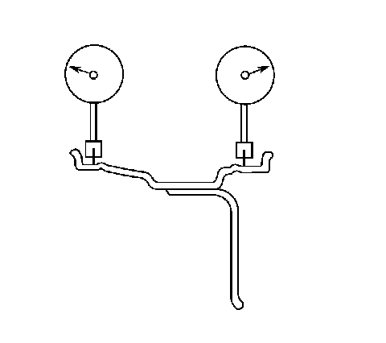
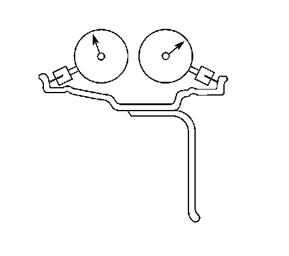

Tire and Wheel Assembly Runout Measurement - Off Vehicle
Tire and Wheel Assembly Runout Measurement - Off Vehicle
1. Raise and support the vehicle.
2. Mark the location of the wheels to the wheel studs and mark the specific vehicle position on each tire and wheel - LF, LR, RF, RR.
3. Remove the tire and wheel assemblies from the vehicle.
4. Closely inspect each tire for proper and even bead seating.
5. If any of the tire beads were not properly or evenly seated, reseat the tire bead, then proceed to step 6. Refer to Tire and Wheel Removal and Installation (Service and Repair) .
6. Mount a tire and wheel assembly on a spin-type wheel balancer.
Locate the tire and wheel assembly on the balancer with a cone through the back side of the center pilot hole.

7. Wrap the outer circumference of each tire with tape (1) in the center tread area.
Wrapping the tread with tape allows for a smooth and accurate reading of radial runout to be obtained.
8. Position the dial indicator on the taped portion of the tire tread such that the dial indicator is perpendicular to the tire tread surface.
9. Slowly rotate the tire and wheel assembly one complete revolution in order to find the low spot.
10. Set the dial indicator to zero at the low spot.
11. Slowly rotate the tire and wheel assembly one more complete revolution and measure the total amount of radial runout.
Maximum tire and wheel assembly radial runout - measured off-vehicle: 1.27 mm (0.050 in)

12. Position the dial indicator on a smooth portion of the tire sidewall, as close to the tread as possible, such that the dial indicator is perpendicular to the tire sidewall surface.
13. Slowly rotate the tire and wheel assembly one complete revolution in order to find the low spot. Ignore any jumps or dips due to sidewall splices.
14. Set the dial indicator to zero at the low spot.
15. Slowly rotate the tire and wheel assembly one more complete revolution and measure the total amount of lateral runout. Ignore any jumps or dips due to sidewall splices and attain an average runout measurement.
Maximum tire and wheel assembly lateral runout - measured off-vehicle: 1.27 mm (0.050 in)
16. Repeat steps 6 through 15 until all of the tire and wheel assembly radial and lateral runout measurements have been taken.
17. If ANY of the tire and wheel assembly runout measurements were NOT within specifications, proceed to step 19.
18. If ALL of the tire and wheel assembly runout measurements WERE within specifications, then the off-vehicle tire and wheel assembly runout is considered acceptable.

19. Position the dial indicator on the horizontal outer surface of the wheel rim flange - with the tire still mounted - such that the dial indicator is perpendicular to the rim flange surface.
Wheel runout should be measured on both the inboard and outboard rim flanges, unless wheel design will not permit. Ignore any jumps or dips due to paint drips, chips, or welds.
20. Slowly rotate the tire and wheel assembly one complete revolution in order to find the low spot.
21. Set the dial indicator to zero at the low spot.
22. Slowly rotate the tire and wheel assembly one more complete revolution and measure the total amount of wheel radial runout.
* Maximum aluminum wheel radial runout - measured off-vehicle, tire mounted: 0.762 mm (0.030 in)
* Maximum steel wheel radial runout - measured off-vehicle, tire mounted: 1.015 mm (0.040 in)

23. Position the dial indicator on the vertical outer surface of the wheel rim flange - with the tire still mounted - such that the dial indicator is perpendicular to the rim flange surface.
Wheel runout should be measured on both the inboard and outboard rim flanges, unless wheel design will not permit. Ignore any jumps or dips due to paint drips, chips, or welds.
24. Slowly rotate the tire and wheel assembly one complete revolution in order to find the low spot.
25. Set the dial indicator to zero at the low spot.
26. Slowly rotate the tire and wheel assembly one more complete revolution and measure the total amount of wheel lateral runout.
* Maximum aluminum wheel lateral runout - measured off-vehicle, tire mounted: 0.762 mm (0.030 in)
* Maximum steel wheel lateral runout - measured off-vehicle, tire mounted: 1.143 mm (0.045 in)
27. Repeat steps 19 through 26 until all of the wheel radial and lateral runout measurements have been taken on each of the - tire and wheel - assemblies with assembly runout measurements which were NOT within specifications.
28. If any of the wheel runout measurements were NOT within specifications, proceed to Measuring Wheel Runout - Tire Dismounted.
29. For any of the wheel runout measurements which WERE within specifications, while the - tire and wheel - assembly runout measurements were NOT within specifications, replace the tire, then balance the assembly. Refer to Tire and Wheel Assembly Balancing - Off Vehicle (Tire and Wheel Assembly Balancing - Off Vehicle) .
30. After replacement of any tires, always re-measure the runout of the affected tire and wheel assembly, or assemblies.
31. Using the matchmarks made prior to removal, install the tire and wheel assemblies to the vehicle.
32. Lower the vehicle.
Wheel Runout Measurement - Tire Dismounted
1. On the tire and wheel assembly, or assemblies with wheel runout measurements - tire mounted - which were NOT within specifications, mark each tire and wheel in relation to each other.
2. Dismount the tire from the wheel. Refer to Tire Mounting and Dismounting (Removal and Replacement) .
3. Mount the wheel on a spin-type wheel balancer.
4. Locate the wheel on the balancer with a cone through the back side of the center pilot hole.

5. Position the dial indicator on the horizontal inner surface of the wheel rim flange - with the tire dismounted - such that the dial indicator is perpendicular to the rim flange surface.
Wheel runout should be measured on both the inboard and outboard rim flanges. Ignore any jumps or dips due to paint drips, chips, or welds.
6. Slowly rotate the wheel one complete revolution in order to find the low spot.
7. Set the dial indicator to zero at the low spot.
8. Slowly rotate the wheel one more complete revolution and measure the total amount of wheel radial runout.
* Maximum aluminum wheel radial runout - measured off-vehicle, tire dismounted: 0.762 mm (0.030 in)
* Maximum steel wheel radial runout - measured off-vehicle, tire dismounted: 1.015 mm (0.040 in)

9. Position the dial indicator on the vertical inner surface of the wheel rim flange - with the tire dismounted - such that the dial indicator is perpendicular to the rim flange surface.
Wheel runout should be measured on both the inboard and outboard rim flanges. Ignore any jumps or dips due to paint drips, chips, or welds.
10. Slowly rotate the wheel one complete revolution in order to find the low spot.
11. Set the dial indicator to zero at the low spot.
12. Slowly rotate the wheel one more complete revolution and measure the total amount of wheel lateral runout.
* Maximum aluminum wheel lateral runout - measured off-vehicle, tire dismounted: 0.762 mm (0.030 in)
* Maximum steel wheel lateral runout - measured off-vehicle, tire dismounted: 1.143 mm (0.045 in)
13. Repeat steps 2 through 12 until all of the wheel radial and lateral runout measurements - tire dismounted - have been taken on each wheel with runout measurements - tire mounted - which were NOT within specifications.
14. If any of the wheel runout measurements - tire dismounted - were NOT within specifications, replace the wheel.
Always measure the runout of any replacement wheels.
15. For any of the wheel runout measurements which WERE within specifications, while the - tire and wheel - assembly runout measurements were NOT within specifications, replace the tire, then balance the assembly. Refer to Tire and Wheel Assembly Balancing - Off Vehicle (Tire and Wheel Assembly Balancing - Off Vehicle) .
16. Using the matchmarks made prior to dismounting the tire, or tires, mount the tire, or tires to the wheel, or wheels, then balance the assembly, or assemblies. Refer to Tire and Wheel Assembly Balancing - Off Vehicle (Tire and Wheel Assembly Balancing - Off Vehicle) .
Always measure the runout of any of the tire and wheel assemblies which have had the tires dismounted and mounted.
17. Using the matchmarks made prior to removal, install the tire and wheel assemblies to the vehicle.
18. Lower the vehicle.